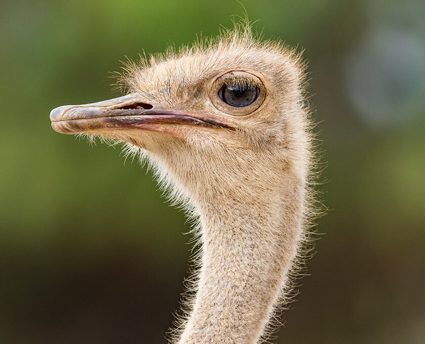

Ostrich, (Struthio camelus), large flightless bird found only in open country in Africa. The largest living bird, an adult male may be 2.75 metres (about 9 feet) tall—almost half of its height is neck—and weigh more than 150 kg (330 pounds); the female is somewhat smaller. The ostrich’s egg, averaging about 150 mm (6 inches) in length by 125 mm (5 inches) in diameter and about 1.35 kg (3 pounds), is also the world’s largest. The male is mostly black but has white plumes in the wings and tail; females are mostly brown. The head and most of the neck, reddish to bluish in colour, is lightly downed; the legs, including the powerful thighs, are bare. The head is small, the bill short and rather wide; the big brown eyes have thick black lashes. Study the courtship practices of these flightless ratites and watch a mother ostrich care for its young Ostriches are seen individually, in pairs, in small flocks, or in large aggregations, depending on the season. The ostrich relies on its strong legs—uniquely two-toed, with the main toe developed almost as a hoof—to escape its enemies, chiefly humans and the larger carnivores. A frightened ostrich can achieve a speed of 72.5 km (45 miles) per hour. If cornered, it can deliver dangerous kicks.